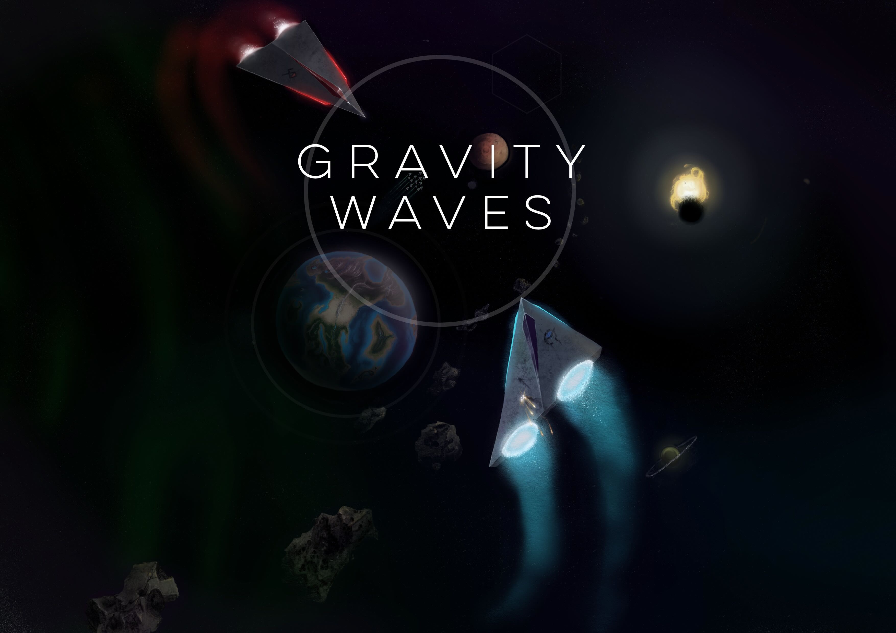
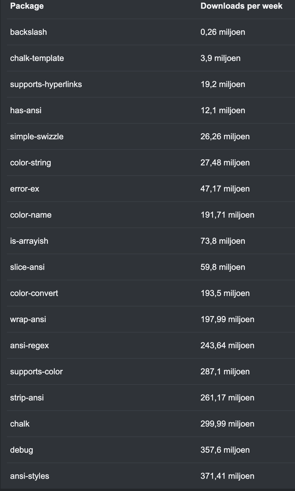
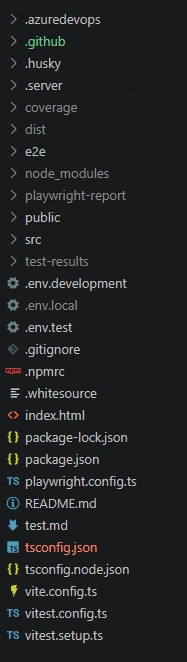
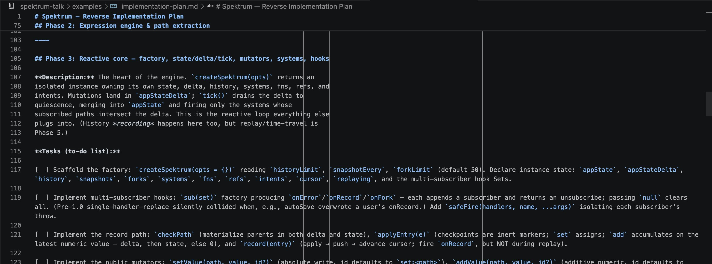

Danny de Zeeuw

+ build tools
+ testing
+ etc. etc. etc.
All headache free.
Stolen keys
Axios · Red Hat · TanStack
Infected packages
event-stream · rc · coa
Abandoned deps
left-pad · node-uuid · request
Typosquatting
crossenv vs cross-env
Transitive deps
1000+ per project
Endless updates
Mend · Checkmarx · Dependabot
Billions of malicious installs — and every package burns AI context.

65
packages · 3.7 MB
0
deps · 3 lines
↓ the vanilla version — the entire server:
Less context. More reasoning for what matters.


dependencies
tiny
attack surface
tests
open source
npmjs.com/package/spektrum
AI text adventure
Correlation is not Causation
Spektrum powered slidedeck
satellite weather app
AI powered conference planner
Spotify Genre exploration tool
This deck navigates through Spektrum's own event store — there is no fallback by design. It loads Spektrum from unpkg, so it needs a working network. To fix:
https://unpkg.com/spektrum@1.1.0 is reachable (some venue wifi blocks CDNs).spektrum.js next to this file and change the importmap to "spektrum": "./spektrum.js".http://, not file:// — ES modules won't load from file://. python3 -m http.server